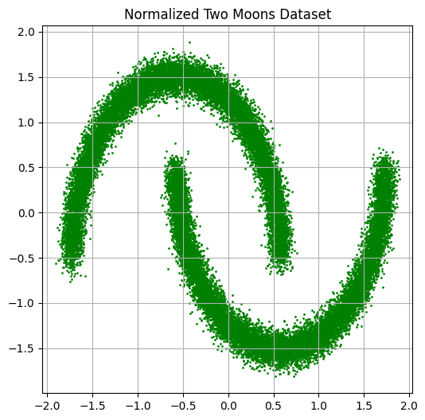
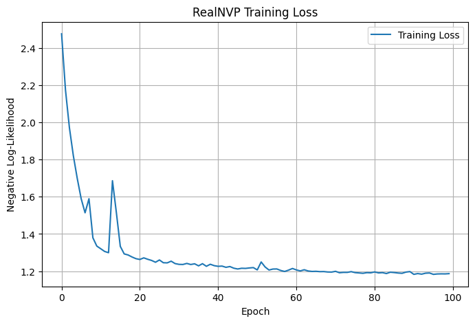
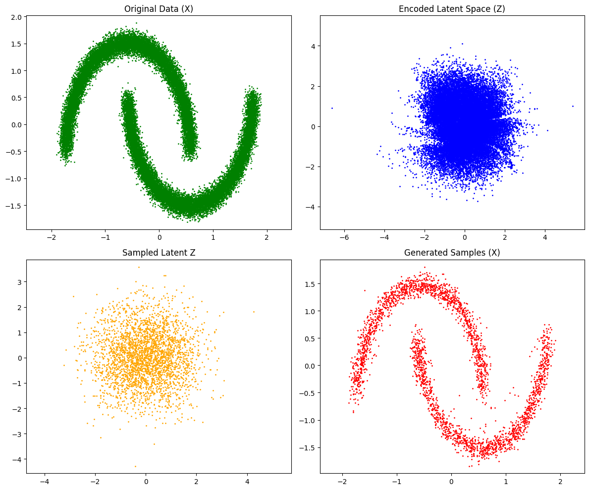

import torch
import torch.nn as nn
import torch.nn.functional as F
import torch.optim as optim
from torch.utils.data import TensorDataset, DataLoader, random_split
from torch.distributions import MultivariateNormal
import numpy as np
import matplotlib.pyplot as plt
from sklearn.model_selection import train_test_split
from sklearn.preprocessing import StandardScaler
from sklearn.datasets import make_moonsRealNVP Model in PyTorch
This notebook provides a simple implementation of a RealNVP flow model.
device = torch.device("cuda" if torch.cuda.is_available() else "cpu")
print(f"Using device: {device}")Using device: cuda1 Create a Normalize the Two Moons Dataset
# Generate the two moons dataset
n_samples = 30000
data, _ = make_moons(n_samples=n_samples, noise=0.05)
data = data.astype(np.float32)
# Normalize the dataset
scaler = StandardScaler()
normalized_data = scaler.fit_transform(data)
# Convert to PyTorch tensor and move to device
normalized_data = torch.tensor(normalized_data, dtype=torch.float32).to(device)
# Visualize the data
plt.figure(figsize=(6, 6))
plt.scatter(normalized_data[:, 0].cpu(), normalized_data[:, 1].cpu(), s=1, c='green')
plt.title("Normalized Two Moons Dataset")
plt.axis("equal")
plt.grid(True)
plt.show()
class CouplingMLP(nn.Module):
def __init__(self, input_dim, hidden_dim=256):
super().__init__()
self.net = nn.Sequential(
nn.Linear(input_dim, hidden_dim),
nn.ReLU(),
nn.Linear(hidden_dim, hidden_dim),
nn.ReLU(),
nn.Linear(hidden_dim, hidden_dim),
nn.ReLU(),
)
# Scale output: initialized near zero with tanh for stability
self.scale = nn.Linear(hidden_dim, input_dim)
self.translate = nn.Linear(hidden_dim, input_dim)
# Apply Xavier initialization
for m in self.modules():
if isinstance(m, nn.Linear):
nn.init.xavier_uniform_(m.weight)
if m.bias is not None:
nn.init.zeros_(m.bias)
def forward(self, x):
h = self.net(x)
s = torch.tanh(self.scale(h)) * 2.0 # bounded scaling
t = self.translate(h)
return s, tclass RealNVP(nn.Module):
def __init__(self, input_dim=2, num_coupling_layers=6):
super().__init__()
self.input_dim = input_dim
self.num_coupling_layers = num_coupling_layers
# Prior distribution in latent space
self.prior = torch.distributions.MultivariateNormal(
torch.zeros(input_dim).to(device),
torch.eye(input_dim).to(device)
)
# Alternating binary masks, e.g., [0,1], [1,0], ...
self.masks = torch.tensor(
[[0, 1], [1, 0]] * (num_coupling_layers // 2),
dtype=torch.float32
).to(device)
# Create coupling layers
self.coupling_layers = nn.ModuleList([
CouplingMLP(input_dim=input_dim) for _ in range(num_coupling_layers)
])
def forward(self, x, reverse=False):
"""
If reverse=False: maps data → latent (x → z)
If reverse=True: maps latent → data (z → x)
"""
log_det = torch.zeros(x.shape[0], device=x.device)
direction = -1 if not reverse else 1
layers = range(self.num_coupling_layers)[::direction]
for i in layers:
mask = self.masks[i]
x_masked = x * mask
s, t = self.coupling_layers[i](x_masked)
s = s * (1 - mask)
t = t * (1 - mask)
if reverse:
x = (x - t) * torch.exp(-s) * (1 - mask) + x_masked
else:
x = (x * torch.exp(s) + t) * (1 - mask) + x_masked
log_det += torch.sum(s, dim=1)
return x, log_det
def log_prob(self, x):
"""
Log probability of input x under the model.
"""
z, log_det = self.forward(x, reverse=False)
log_prob_z = self.prior.log_prob(z)
return log_prob_z + log_det
def loss(self, x):
"""
Negative log-likelihood loss.
"""
return -self.log_prob(x).mean()batch_size = 256
epochs = 100
learning_rate = 1e-4dataset = TensorDataset(normalized_data)
train_loader = DataLoader(dataset, batch_size=batch_size, shuffle=True)model = RealNVP(input_dim=2, num_coupling_layers=6).to(device)
optimizer = optim.Adam(model.parameters(), lr=learning_rate)losses = []
for epoch in range(epochs):
epoch_loss = 0.0
model.train()
for batch in train_loader:
x = batch[0].to(device)
optimizer.zero_grad()
loss = model.loss(x)
loss.backward()
optimizer.step()
epoch_loss += loss.item() * x.size(0)
avg_loss = epoch_loss / len(train_loader.dataset)
losses.append(avg_loss)
if (epoch + 1) % 10 == 0:
print(f"Epoch [{epoch+1}/{epochs}], Loss: {avg_loss:.4f}")Epoch [10/100], Loss: 1.3349
Epoch [20/100], Loss: 1.2672
Epoch [30/100], Loss: 1.2408
Epoch [40/100], Loss: 1.2296
Epoch [50/100], Loss: 1.2191
Epoch [60/100], Loss: 1.2145
Epoch [70/100], Loss: 1.1950
Epoch [80/100], Loss: 1.1911
Epoch [90/100], Loss: 1.1978
Epoch [100/100], Loss: 1.1867plt.figure(figsize=(8, 5))
plt.plot(losses, label="Training Loss")
plt.xlabel("Epoch")
plt.ylabel("Negative Log-Likelihood")
plt.title("RealNVP Training Loss")
plt.grid(True)
plt.legend()
plt.show()
model.eval()
with torch.no_grad():
z, _ = model(normalized_data, reverse=False)with torch.no_grad():
z_samples = model.prior.sample((3000,))
x_samples, _ = model(z_samples, reverse=True)f, axes = plt.subplots(2, 2, figsize=(12, 10))
# Original data
axes[0, 0].scatter(normalized_data[:, 0].cpu(), normalized_data[:, 1].cpu(), s=1, c='green')
axes[0, 0].set_title("Original Data (X)")
axes[0, 0].axis("equal")
# Latent representation of data
axes[0, 1].scatter(z[:, 0].cpu(), z[:, 1].cpu(), s=1, c='blue')
axes[0, 1].set_title("Encoded Latent Space (Z)")
axes[0, 1].axis("equal")
# Random latent samples
axes[1, 0].scatter(z_samples[:, 0].cpu(), z_samples[:, 1].cpu(), s=1, c='orange')
axes[1, 0].set_title("Sampled Latent Z")
axes[1, 0].axis("equal")
# Transformed back to data
axes[1, 1].scatter(x_samples[:, 0].cpu(), x_samples[:, 1].cpu(), s=1, c='red')
axes[1, 1].set_title("Generated Samples (X)")
axes[1, 1].axis("equal")
plt.tight_layout()
plt.show()